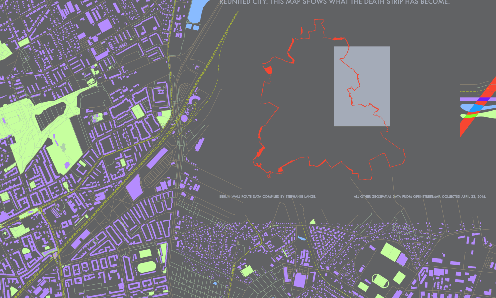

The Berlin Wall was plural. Two concrete barriers divided East from West, and in between lay the Death Strip: a heavily-guarded minefield razed flat except for 302 watchtowers. The wall began to be officially dismantled in 1990, but it left a scar of emptiness through the center of a suddenly reunited city. This map shows what the Death Strip has become.
I downloaded a set of OpenStreetMap layers containing the shapes of all buildings, water bodies, greenspace, roads, paths, and railways within an area of Berlin, then wrote an FME scrip to merge them with dataset compiled by Stephanie Lange containing the inner and outer Berlin Wall coorindates and export all that as a massive SVG file which I could import into Illustrator for design refinements.
Berlin Wall route data compiled by Stephanie Lange, 2009.
All other geospatial data from OpenStreetMap, collected April 23, 2014.
Designed by Jacob Ford in May 2014.